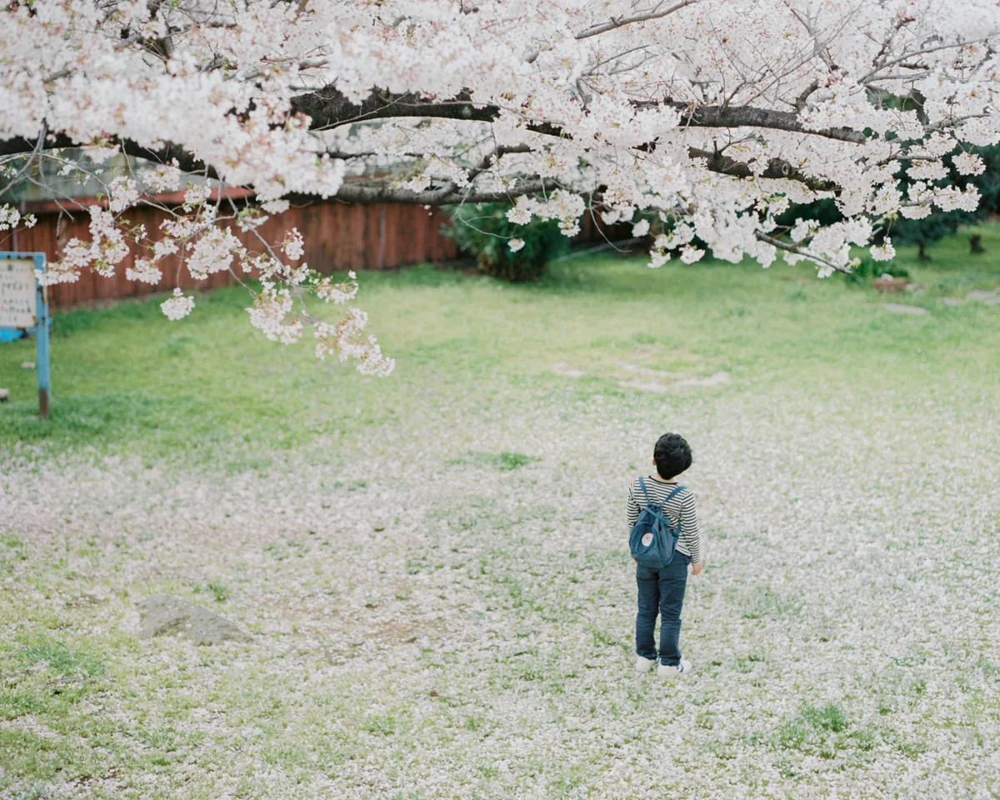
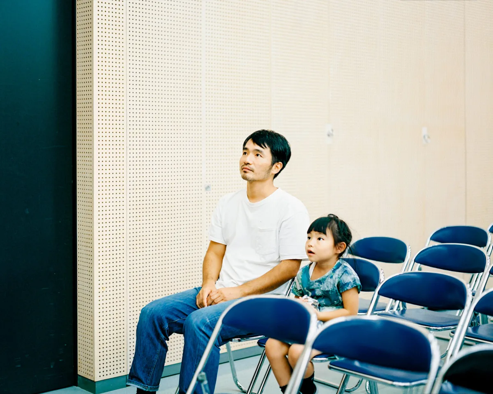
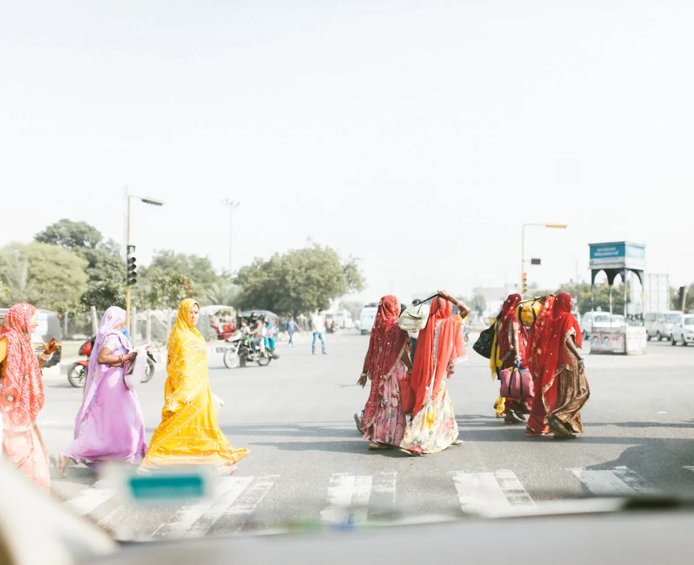
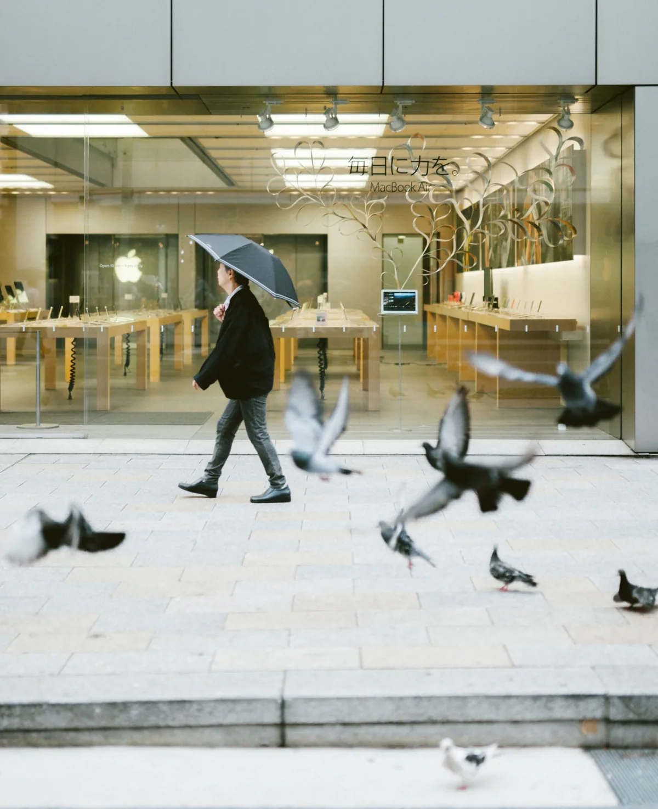
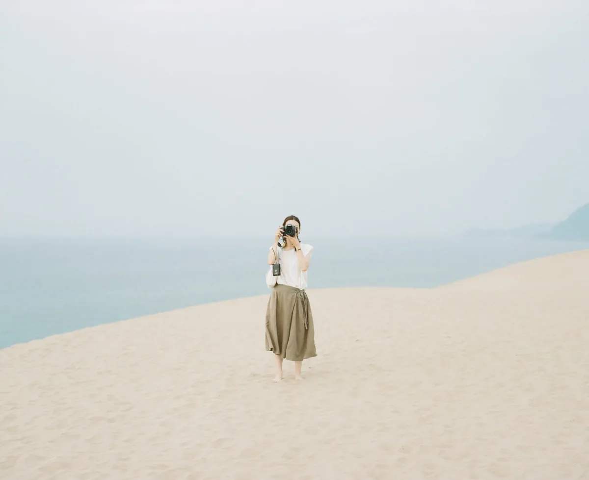

바닷가 방파제에 아이 둘이 나란히 앉아 있다. 둘 다 등을 보이고 있어서 얼굴은 보이지 않는다. 멀리 다리와 공장 굴뚝이 흐릿하다. 사진가 하마다 히데아키(濱田英明)가 두 아들 하루와 미나를 찍은 사진이다. 남의 집 아이들인데, 보는 사람마다 자기 어린 시절의 어느 오후를 떠올린다.
디자이너에서 사진가로
하마다는 1977년 효고현 아와지섬에서 태어났다. 디자이너로 일하다 2012년, 서른다섯에 프리랜서 사진가가 됐다. 같은 해 대만에서 첫 사진집 《Haru and Mina》를 냈다. 지금은 오사카와 고베를 오가며 개인 작업과 잡지, 광고, 인물 사진, 영상 연출까지 맡는다.
《Haru and Mina》, 11년의 거리
하루와 미나는 하마다의 두 아들이다. 그는 2009년 7월부터 2020년 4월까지 두 아이를 찍었다. 2025년 말에 나온 개정·증보판은 그동안 찍은 8,000여 장 가운데 313장을 골라 504쪽에 담았다.
사진 속 아이들은 카메라를 보고 포즈를 잡지 않는다. 물가를 걷고, 나무에 오르고, 방파제에 앉아 먼 데를 본다. 화면에는 아이보다 주변이 더 넓게 들어온다. 벚꽃이 떨어진 풀밭, 강둑의 콘크리트, 흐린 하늘. 뒷모습과 옆모습이 많다. 그래서 표정을 읽기 전에 그 자리의 공기를 먼저 느끼게 된다.
처음부터 이렇게 찍지는 않았다. 하마다는 SHIPS 와의 인터뷰에서, 처음에는 아이들 얼굴 가까이에서 찍다가 중형 필름 카메라를 쓰면서 떨어진 구도를 찾게 됐다고 말했다. 매일 함께 있으니 오히려 떨어질 수 있다는 것이다. 가깝다는 것을 보여 주려고 붙어 설 필요가 없다. 긴 시간을 함께 보내니 기다릴 수 있다.

한 장만 보면 평범한 가족사진일 수 있다. 그런데 여러 해의 사진을 이어 보면 아이들의 키가 자라고, 둘 사이의 거리가 바뀌고, 찍는 사람과의 간격도 달라진다. 하마다의 사진은 한 장보다 여러 장이 쌓일 때 힘을 낸다.
《Family》, 표정 대신 몸의 방향
《Family, 2012–2017》은 두 아이를 넘어 가족이라는 관계를 본다. 모두가 정면을 보고 서는 가족사진은 드물다. 한 사람이 다른 사람을 바라보거나, 같은 공간에서 각자 시간을 보내는 순간이 많다.
한 걸음 물러난다고 감정이 줄어들지는 않는다. 물러나야 관계 전체가 보인다. 하마다는 얼굴만 키우지 않고 몸이 향한 쪽, 방의 생김새, 사람과 사람 사이의 빈자리까지 함께 담는다. 아마나와의 인터뷰에서 그는 대상과의 물리적 거리가 심리적 거리로 이어지고, 떨어져 있어야 보는 사람이 사진 안으로 들어올 수 있다고 설명했다.

《DISTANT DRUMS》, 어디도 아닌 장소
2019년 자비출판한 《DISTANT DRUMS》는 2013년부터 2018년까지 런던, 파리, 이집트, 타이베이, 홍콩, 하노이 등지에서 찍은 사진을 묶었다. 제목은 무라카미 하루키의 여행기 《먼 북소리》에서 왔다.
하마다의 여행 사진에는 랜드마크가 거의 없다. 길을 건너는 사람들, 오토바이에 걸터앉은 남자들, 서점 앞의 입간판 같은 것들이다. 낯선 나라에서도 누군가는 걷고, 기다리고, 일한다. 도시의 이름을 빼면 사진들은 서로 먼 장소인데도 한 세계처럼 이어진다. 2014년의 《India》와 《USA》 연작에서도 같은 눈이 보인다.

도쿄에서는 거꾸로다. 2014년부터 이어진 《Tokyo / Somewhere》는 무료 잡지 《메트로폴리타나》의 연재에서 출발했다. 익숙한 도시에서 그는 이름 붙지 않은 장소를 찾는다. 비둘기가 날아오르는 보도, 횡단보도 앞에 선 노인, 건물 모서리에 머문 빛이다.

《Camera Talk》, 바라보는 사람을 바라보기
2010년부터 이어진 《Camera Talk》는 카메라를 든 사람을 다시 찍는 연작이다. 모래 언덕에서, 개울 한가운데서, 공원 잔디밭에서 누군가 이쪽을 향해 카메라를 들고 있다. 작가는 이 연작에 짧은 설명을 붙였다. 당신과 당신을 바라보는 사람은 같은 시대를 산다는 것이다.
이 연작은 하마다가 사진을 어떻게 보는지 그대로 드러낸다. 사진에는 찍힌 사람만이 아니라 바라본 사람의 시간도 남는다. 찍는 사람과 찍히는 사람은 같은 순간을 나눠 가진다. 그렇게 보면 《Haru and Mina》는 아버지가 아이를 기록한 사진이면서, 한 사람이 다른 사람을 오래 바라본 기록이기도 하다.

열 장이라는 제약
하마다가 즐겨 쓴 장비는 작가 본인의 인터뷰와 게시물로 확인된다. 2011년 로모그래피 인터뷰에서 그는 가방에 늘 넣는 장비로 Pentax 67II 와 SMC Takumar 6×7 105mm F2.4·90mm F2.8, 그리고 Kodak Portra 400 을 꼽았다. 2019년 2월 X 게시물에서도 주로 쓰는 조합으로 Pentax 67 과 105mm F2.4, Portra 400 을 적었다. 현상과 스캔은 야마모토 사진기점에 맡기고, 필요하면 Lightroom 과 Photoshop 에서 직접 다듬는다고 했다.
같은 2011년 인터뷰에서 그는 중형 필름 한 롤로 찍을 수 있는 것이 열 장이라고 말했다. 그래서 프레임 구석까지 살피게 되고, 셔터를 누르는 때를 아끼게 된다고 했다. 아이를 쫓아가며 연달아 찍는 대신 한 걸음 떨어져 기다리는 방식이 이 제약과 맞닿아 있지 않을까?
다만 하마다를 필름만 쓰는 사진가로 묶기는 어렵다. 2022년 11월 게시물에는 메인 필름 카메라 Pentax 67II, 서브 필름 카메라 Mamiya 645 AFD II, 메인 디지털 카메라 Fujifilm GFX 100S 가 나란히 적혀 있다. 2018년 《COMMERCIAL PHOTO》 인터뷰에서는 iPhone 과 디지털카메라, 필름으로 찍은 사진을 한 갤러리에 올릴 때 톤을 맞춘다고 했다. 그의 색은 필름 한 종류에서 나오지 않는다. 서로 다른 장비로 찍은 결과를 자기 눈으로 묶어 낸 결과다.
영화 현장에서 같은 거리로
최근 하마다의 이름은 고레에다 히로카즈 감독의 실사 영화 「룩백」에서도 볼 수 있다. 그는 약 3개월 동안 촬영 현장에 붙어 지내며 장면 사진을 찍었다. 본편 카메라와 다른 자리에서, 영화에 나오지 않는 순간과 주변의 사물까지 담았다. 두 주인공이 함께 보낸 시간이 보는 사람의 기억처럼 느껴진다면, 《Haru and Mina》에서 이어진 거리와 기다림이 거기서도 작동했기 때문일 것이다. 영화와 필름 이야기는 「룩백」 기사에 따로 정리했다.

작가 정보
- 이름 하마다 히데아키(濱田英明, Hideaki Hamada)
- 출생 1977년, 일본 효고현 아와지섬
- 주요 작업 《Haru and Mina》(2012, 2025 개정·증보판), 《DISTANT DRUMS》(2019), 《Family》, 《Tokyo / Somewhere》, 《Camera Talk》
작품 전체는 작가 웹사이트에서 볼 수 있다.